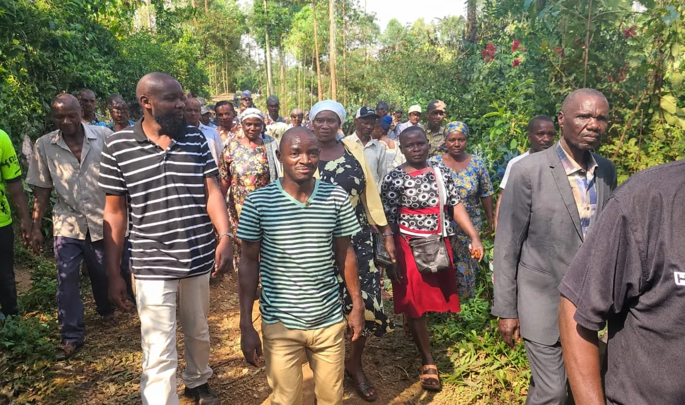
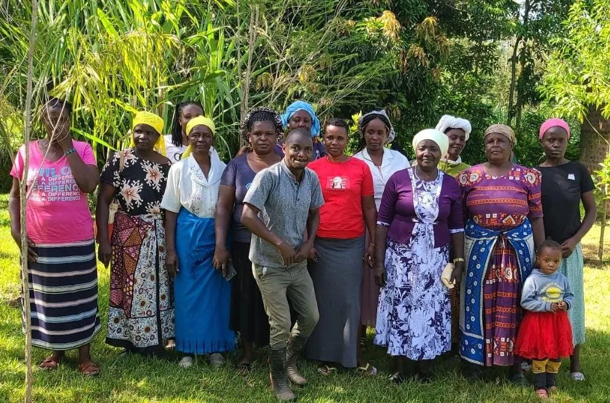

Ikolomani Constituency · 2027
Hon. Clarence Namunyu Kasali
“Sovereign Power Belongs to the People.”
Aspiring Member of Parliament, campaigning to protect Ikolomani’s land, make mining safer for artisanal miners and deliver accountable representation.
Aspiring Member of ParliamentIkolomani, Kakamega County
The 2022 voter figure is historical and does not describe the 2027 electorate. Sources
Our message
A representative should answer first to the people who live with the decisions.
On land, on mining and on the services every ward depends on, the campaign’s priorities are proposals, set out openly and open to change as residents respond.
Read the manifesto
Signature issue
Our Gold.Our Land. Our Future.
Gold is part of Ikolomani’s identity, and families here live with both its promise and its risks. The campaign puts land, miner safety and fair process at the centre.
Proposed priorities, not confirmed promises.
- Protect land and community interestsHouseholds informed, consulted and treated fairly.
- Make artisanal mining saferSafer shafts, training and recognition for miners.
- Mine responsiblyProtect water and rehabilitate damaged land.
- Open, accountable decisionsLicences and agreements that residents can see.
Our priorities
What the campaign will work on
Eight areas, each set out in the manifesto with the concern, the proposal and what an MP can lawfully do.
Land and community interests
Fair process and clear information for families affected by land decisions.
Read the chapter02Miner safety and dignity
Safer working conditions and respect for lawful artisanal miners.
Read the chapter03Responsible mining
Protect water, rehabilitate land and deal with unsafe shafts.
Read the chapter04Youth and enterprise
Practical routes into skills, business and employment.
Read the chapter05Education
Safe, equipped schools and early-childhood learning within reach.
Read the chapter06Healthcare
Closer, better-run care for every ward.
Read the chapter07Roads and services
Roads, water and services families can rely on.
Read the chapter08Accountability
Open forums, public reporting and a record residents can read.
Read the chapterThe candidate
Meet Clarence
Born in 1981 in Luhakayu Village, Idakho Central, Hon. Clarence Namunyu Kasali is an educationist, community leader and social impact advocate. He is the Founder and Director of The Holyway Junior School and an active member of the Rotary Club of Gachie. He is seeking election as Member of Parliament for Ikolomani in 2027.
Know your ward
Ikolomani’s four wards
Idakho Central, East, North and South. The 2022 register is a historical reference, not the 2027 electorate, and it measures the size of an electorate rather than the severity of a ward’s challenges.
Source: IEBC, registered voters per county assembly ward, 2022 general election.
Ikolomani
The people the campaign is for
Small-scale farming and artisanal mining shape daily life across much of Ikolomani, according to NG-CDF Ikolomani.


Join the campaign for Ikolomani.
Volunteer in your ward, share a concern, or get in touch with the team.